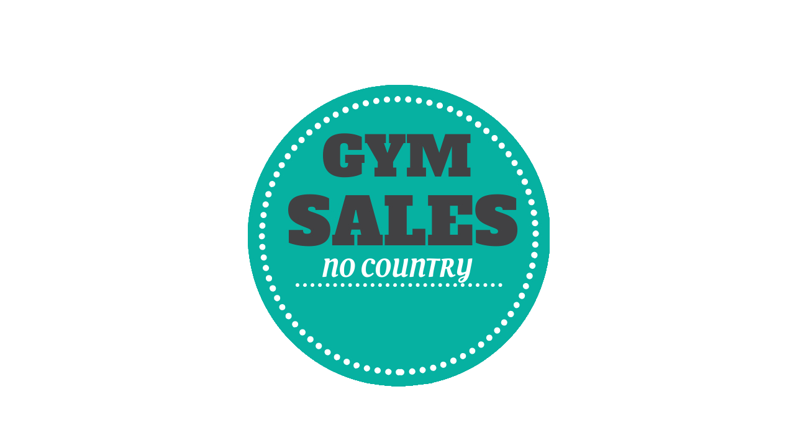
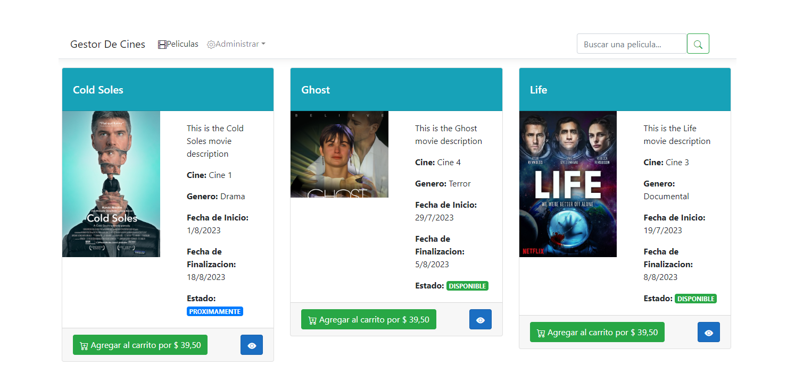

No Country for Juniors

Proyecto realizado para el bootcamp No Country for Juniors. Para el front utilizamos Javascript, HTML, CSS, Jquery. Para el backend usamos Java en Springboot y MSQL.
Fue una gran experiencia poder aprender en grupo, conocer grandes personas y futuros grandes programadores.
Ver
Semillero Quinto Impacto
En el bootcamp del semillero de Quinto Impacto se trabaja en proyectos de impacto social y ecológico.
En este caso me tocó el proyecto Mi Legado que consiste en una red social para conmemorar a nuestros seres queridos que ya no están más entre nosotros.
Ver
Gestor de Cine

Creación de un Gestor de Cines en ASP .NET Core - MVC con un CRUD de peliculas, actores y productores. Incluye un carrito y pago con MercadoPago. También tiene seguridad y permisos, panel de administracion y mucho más.
Ver